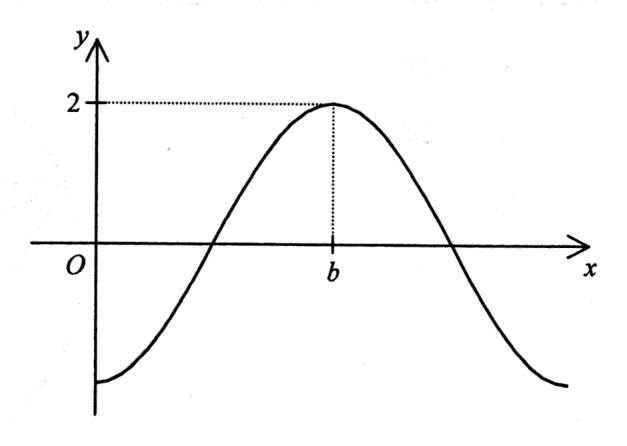

三角學 · 三角函數的圖像

圖像與 $y$ 軸相交於 $x$ 軸之下，即 $a \lt 0$。
圖中最高點的 $y$ 坐標為 $2$，故 $|a|=2$，配合 $a \lt 0$ 得 $a=-2$。
$$y=-2\cos 2x^{\circ}$$
要取最大值 $2$，需 $\cos 2x^{\circ}=-1$，即 $2x=180$（在一個周期內），故 $x=90$。
所以 $b=90$。
函數的周期為 $\dfrac{360^{\circ}}{2}=180^{\circ}$，圖中兩個相鄰的最高點相距 $180^{\circ}$，與圖像相符。
答案為 A（$a=-2$、$b=90$）。